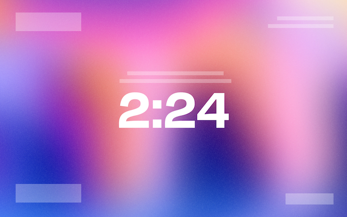
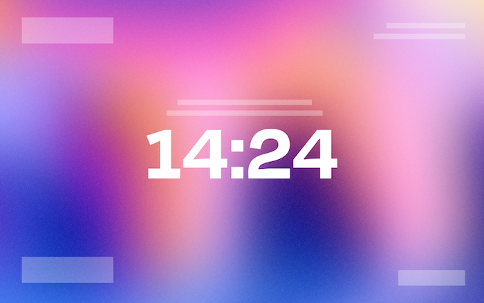

12:00:00
Good evening, Farhan.
"The secret of getting ahead is getting started."
25:00
Start
Focus Priority
25:00
Settings
Themes
Home Theme
Focus Theme
Ambient Theme
General
Clock
Focus Timer
Home Theme
Focus Theme
Ambient Theme
Clock Settings
Dashboard Name
Clock Format

12-hour Clock

24-hour Clock
Focus Timer Settings
Timer Lengths (minutes)
Pomodoro Focus
Short Break
Long Break
Alert Sounds
Sound
Chime
Bell
Synth
Volume